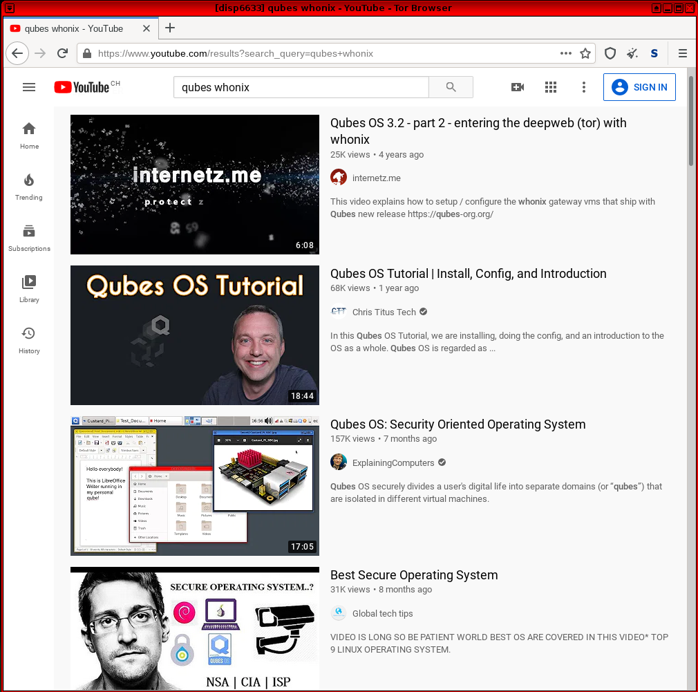
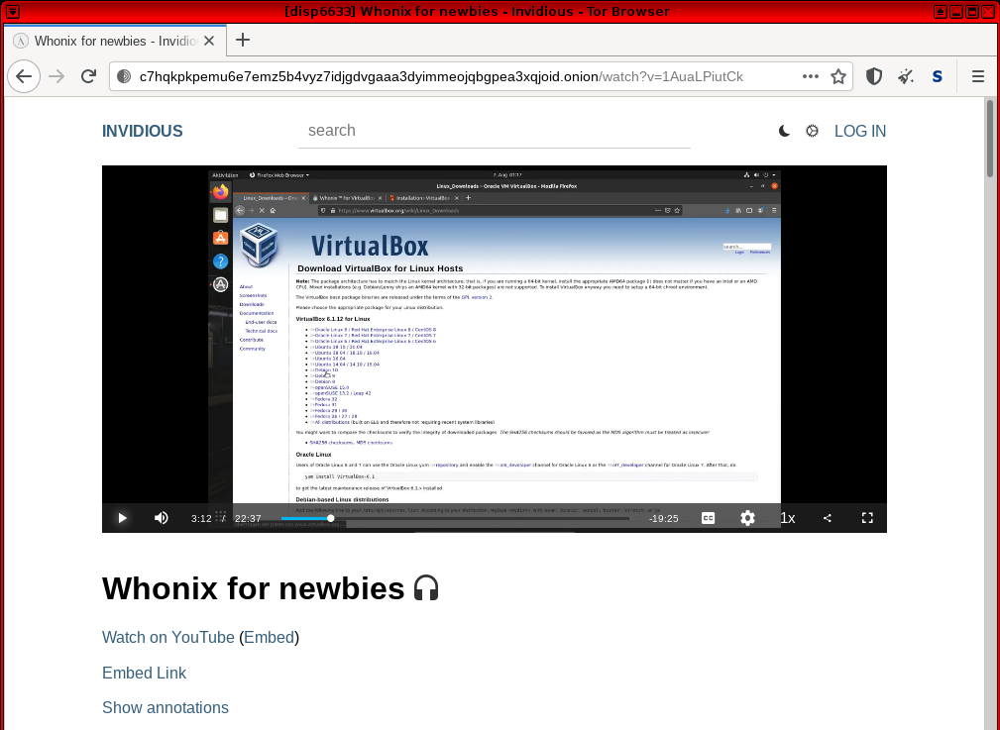
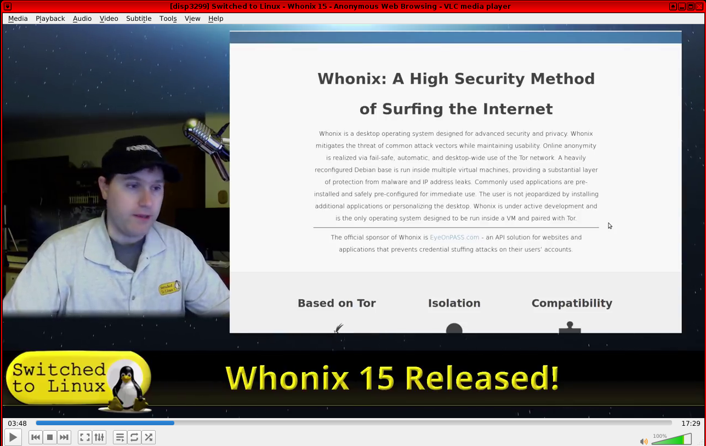

We believe security software like Whonix needs to remain Open Source and independent. Would you help sustain and grow the project? Learn more about our 14 year success story and maybe DONATE!
Other BrowsersDocumentationyt-dlpPrevious page: Other BrowsersIndex page: DocumentationNext page: yt-dlpWatching YouTube Videos in Whonix

YouTube videos can be watched using Tor Browser, streaming, MPV or VLC Media Player, other alternatives such as Invidious. Alternatively, downloading may also be possible. This page also discusses troubleshooting YouTube performance and other issues.
Introduction
To watch
 YouTube videos anonymously, users have three options:
YouTube videos anonymously, users have three options:
- Watching videos directly in
 Tor Browser via the YouTube
or Invidious websites.
Tor Browser via the YouTube
or Invidious websites. - Downloading videos -- for example via the
 yt-dlp command line downloader, Invidious or YouTube video
download sites -- and then watching them in
yt-dlp command line downloader, Invidious or YouTube video
download sites -- and then watching them in
 VLC Media Player (pre-installed).
VLC Media Player (pre-installed). - Using the YouTube URL to watch videos directly in MPV or VLC Media Player via the network streaming option.
Tor Browser

YouTube Website

To watch videos directly on the YouTube website, use Tor Browser.
Figure: YouTube in Whonix Tor Browser

It is common to experience "buffering issues" (interrupted video
playback) because Tor is
slow. A simple workaround is to pause the video when it first starts
so it can "buffer". This allows enough of the upcoming video playback to
load in advance for an uninterrupted viewing experience. Alternatively
the videos can be downloaded instead and watched in a media application
like VLC Media Player, rather than relying upon an online internet
connection with the YouTube website. To stream videos:
* Set the Tor Browser security slider to the "Safer" setting
→ click the "script blocked" icon →
temporarily allow JavaScript for youtube.com
[1]
Video playback is usually dysfunctional if the security slider is set to the "Safest" level. Higher security settings might work at a later time, so readers are encouraged to edit this page if the situation changes. In late 2021 it is common for YouTube to report 'suspicious network activity' when attempting to stream videos in Tor Browser (due to the detection of Tor exit nodes in use).
Invidious
It is strongly recommended to utilize Invidious (project homepage) as an alternative front-end to YouTube. It is recommended to also check the register of public clearnet Invidious instances and Invidious onion services.
Invidious is more lightweight than YouTube itself and comes with many additional features such as a video download option and onion addresses. Also, it does not present the user with login prompts or terms of service messages.
Figure: Invidious in Whonix Tor Browser

Media Player Streaming
MPV
Installation
The MPV video player can be installed to stream videos from Youtube or Invidious without enabling JavaScript.
Install package(s) mpv following these instructions:
1 Platform specific notice.
- Non-Qubes-Whonix: No special notice.
- Qubes-Whonix: In Template.
2
 Update the package lists and upgrade the system.
Update the package lists and upgrade the system.
sudo apt update && sudo apt full-upgrade
3
Install the mpv package(s).
Using apt command line
 <code>--no-install-recommends</code> option is in most cases
optional.
<code>--no-install-recommends</code> option is in most cases
optional.
sudo apt install --no-install-recommends mpv
4 Platform specific notice.
- Non-Qubes-Whonix: No special notice.
- Qubes-Whonix: Shut down Template and restart App Qubes based on it
as per
 Qubes Template Modification.
Qubes Template Modification.
5 Done.
The procedure of installing package(s) mpv is
complete.
Usage
After locating the relevant video, copy the URL and run.
mpv your URL
VLC Media Player

A simpler option is to use a media player,
 VLC Media Player which comes
pre-installed in Whonix:
VLC Media Player which comes
pre-installed in Whonix:
- Locate and copy the relevant video URL.
- Launch VLC Media Player.
Media→Open Network Stream...→Paste the URL→Play
Figure: YouTube Streaming in VLC Media Player

Troubleshooting
General Issues

- "Forget" about Whonix for a moment and imagine you had never heard of the platform. Test this using the virtualizer software (such as VirtualBox, KVM or Qubes) without Whonix being involved first.
- Try a VM other than Whonix such as Debian
trixie. - If the issue persists, this means the root issue is not caused by Whonix. Therefore it is recommended to attempt to resolve the issue as per the Self Support First Policy.
VirtualBox

 VirtualBox users should note that video performance might be slow. For a
possible solution, see:
VirtualBox users should note that video performance might be slow. For a
possible solution, see:
 VirtualBox, Troubleshooting: Slow Video Playback.
VirtualBox, Troubleshooting: Slow Video Playback.
KVM
See KVM, Troubleshooting: Videos.
See Also
Footnotes
- It is normally unnecessary to allow JavaScript for other domains.
- re-creation
Categories: Documentation